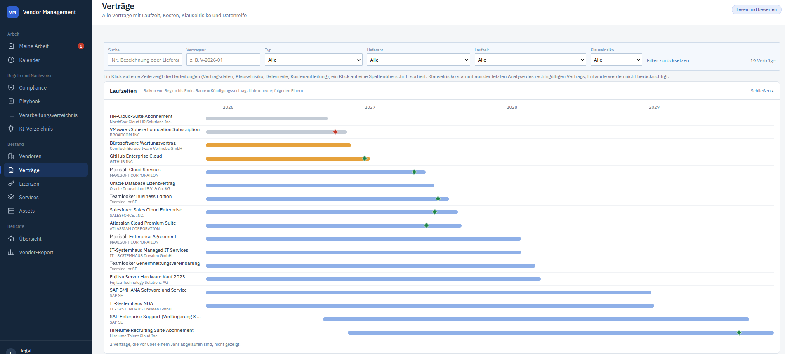
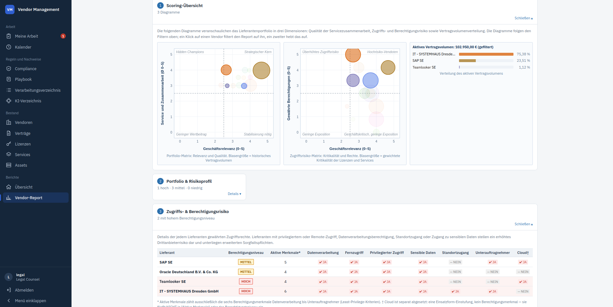
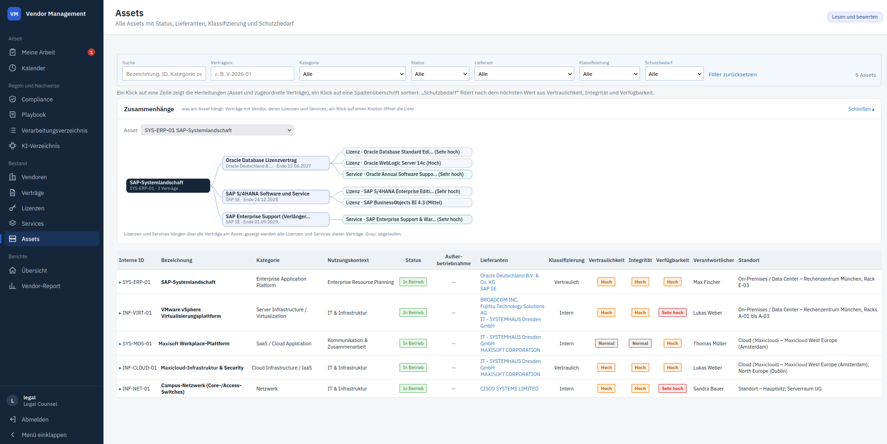
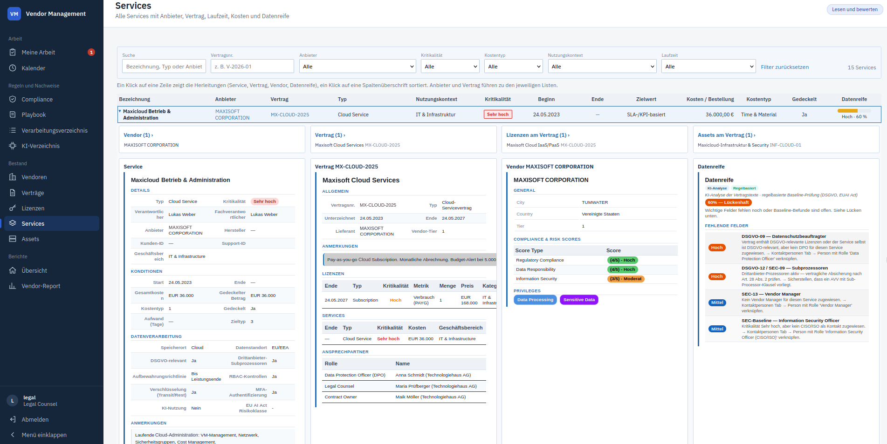
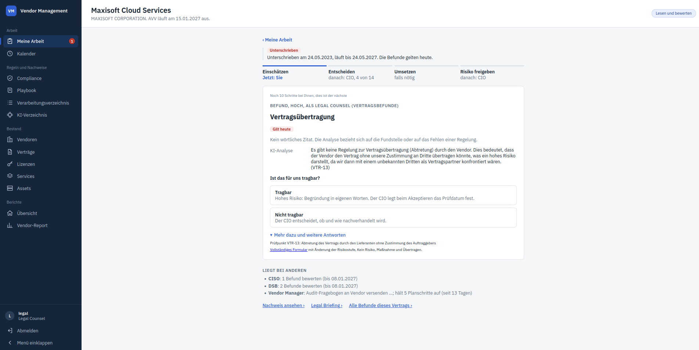
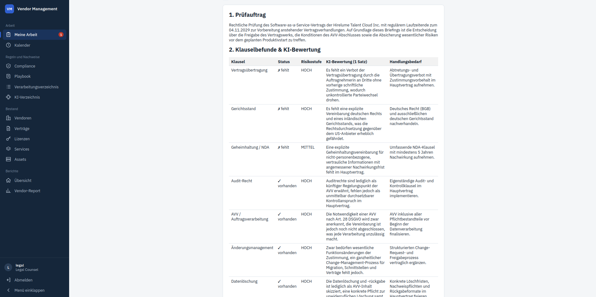
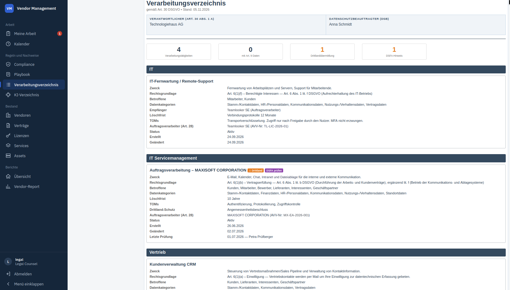

Vendor Data Management · Web-Anwendung
Lieferanten, Verträge und Compliance im laufenden Betrieb begleiten
Ein gemeinsamer Bestand für IT-Vendoren, Verträge, Lizenzen, Services und Assets. CIO, CISO, Datenschutz und Legal sehen darin ihren nächsten Schritt, statt Excel-Listen und E-Mails hinterherzulaufen. Jede Entscheidung bleibt je Vertrag nachvollziehbar.

Der Rundgang
Vom Überblick zum belegbaren Entscheid
Die Anwendung folgt der Arbeit, nicht der Datenbankstruktur. Sie antwortet der Reihe nach auf die Fragen, die sich im Lieferanten- und Compliance-Alltag immer wieder stellen.
1 · Lieferanten- und Vertragsmanagement
Kündigungsfristen und Lieferantenrisiken früh sehen
Kündigungsstichtage liegen oft in einem Vertrag und dem Kopf einer einzelnen Person. Die Zeitachse zeigt sie für das ganze Portfolio, ein Kalender ergänzt sie je Funktion. Der Vendor-Report ordnet die Lieferanten nach Geschäftsrelevanz, Servicequalität und gewährten Rechten.

2 · Asset-, Lizenz- und Servicebezug
Ein Bestand, in dem alles zusammenhängt
Wer vor einer Kündigung oder Migration wissen will, was betroffen ist, muss sonst mehrere Listen abgleichen. Hier führt jede Zeile über Links zu den zugehörigen Datensätzen, vom Asset über den Vertrag bis zur einzelnen Lizenz.


3 · Risiko- und Freigabeprozess
Immer nur ein Schritt, klar zugeordnet
Befunde aus der Vertragsanalyse werden zu einer Kette je Vertrag: einschätzen, entscheiden, umsetzen, Risiko freigeben. Die Fachrolle beurteilt, der CIO entscheidet. Jede Karte kennzeichnet, ob der Befund heute gilt, erst bei Unterschrift droht oder auf einer ungeprüften Grundlage beruht.


4 · Compliance und Nachweise
Belegen, statt im Audit zusammenzusuchen
Verzeichnisse und Entscheidungen entstehen aus denselben Daten, mit denen ohnehin gearbeitet wird. Der Nachweis je Vertrag zeigt wann, wer, was für jeden Befund. Die Compliance-Seite misst täglich und hält Restrisiken aus Befunden getrennt von Ampeln aus Stammdaten. Akzeptierte Risiken bleiben Risiken und zählen nie als reduziert.

Rollen
Wer in der Anwendung was tut
Die Anmeldung läuft über Rollen. Sie bestimmen, was jemand entscheiden oder bearbeiten darf.
| Rolle | Aufgabe in der Web-Anwendung |
|---|---|
| CIO | Entscheidet über Befunde und Sammelentscheide, legt die Risikorichtlinie fest und gibt Restrisiken frei. |
| CISO | Schätzt Sicherheitsbefunde ein und erteilt die Sicherheitsfreigabe. |
| Datenschutz (DSB) | Schätzt Datenschutzbefunde ein und meldet Aufgaben als erledigt. |
| Legal Counsel | Schätzt Vertragsbefunde ein, nutzt das Legal Briefing und pflegt im Playbook die Position zu jedem Klauseltyp. |
| Controlling, TPRM, Compliance | Lesen Bestand, Berichte und Verzeichnisse. |
| Vendor Manager | Pflegt die Stammdaten und stösst Vertragsanalysen in der Desktop-Anwendung an. |
Einordnung
Ergänzt Ihre Systeme, ersetzt sie nicht
- Kein ITSM-Tool: Tickets, Incidents und Changes bleiben, wo sie sind. Die Anwendung deckt die Lieferanten-, Vertrags- und Assetseite ab. Eine Schnittstelle zu ITSM-Werkzeugen gibt es bisher nicht.
- Kein Einkaufssystem: Bestellungen, Unterschriften und Dokumentenablage bleiben in Coupa, SAP oder dem führenden System. Freigaben gibt es nur dort, wo es um Risiko und Compliance geht.
- Keine KI-Entscheidungen: KI schlägt vor und ist gekennzeichnet. Eine vorbereitete Einschätzung lässt sich nur bei mittleren und niedrigen Befunden übernehmen und ist dann im Nachweis als übernommen vermerkt.
Technik
Web für die Beteiligten, Desktop für die Datenpflege
- Gemeinsame Fachlogik: Die Web-Anwendung (Spring Boot, Thymeleaf, Spring Security) nutzt dieselbe Bibliothek und Datenbank wie die Desktop-Anwendung, also dieselben Prüfregeln.
- Klare Schreibgrenze: Im Web entstehen nur Einschätzungen, Entscheidungen, Aufgaben und tägliche Messungen. Verträge, Vendoren, Lizenzen, Services und Assets lassen sich dort nicht ändern.
- Ihre Infrastruktur: Server und Datenbank sind für den Betrieb beim Kunden ausgelegt, nicht als Cloud-Dienst des Anbieters.
Stand November 2026: Die Web-Anwendung ist neu und läuft bisher mit erfundenen Demodaten in einer Testumgebung, noch nicht im produktiven Kundeneinsatz. Der nächste sinnvolle Schritt wäre ein begrenztes Pilotprojekt mit Ihren eigenen Verträgen.
Mehr sehen oder direkt sprechen
Wie die Vertragsanalyse dahinter arbeitet und wie ihre Ergebnisse regelbasiert geprüft werden, zeigt die Fallstudie zur Desktop-Anwendung. Für Fragen zu Ihrer eigenen Situation reicht ein kurzes Gespräch.